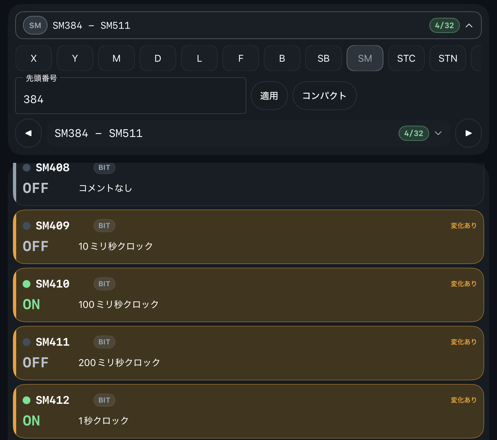
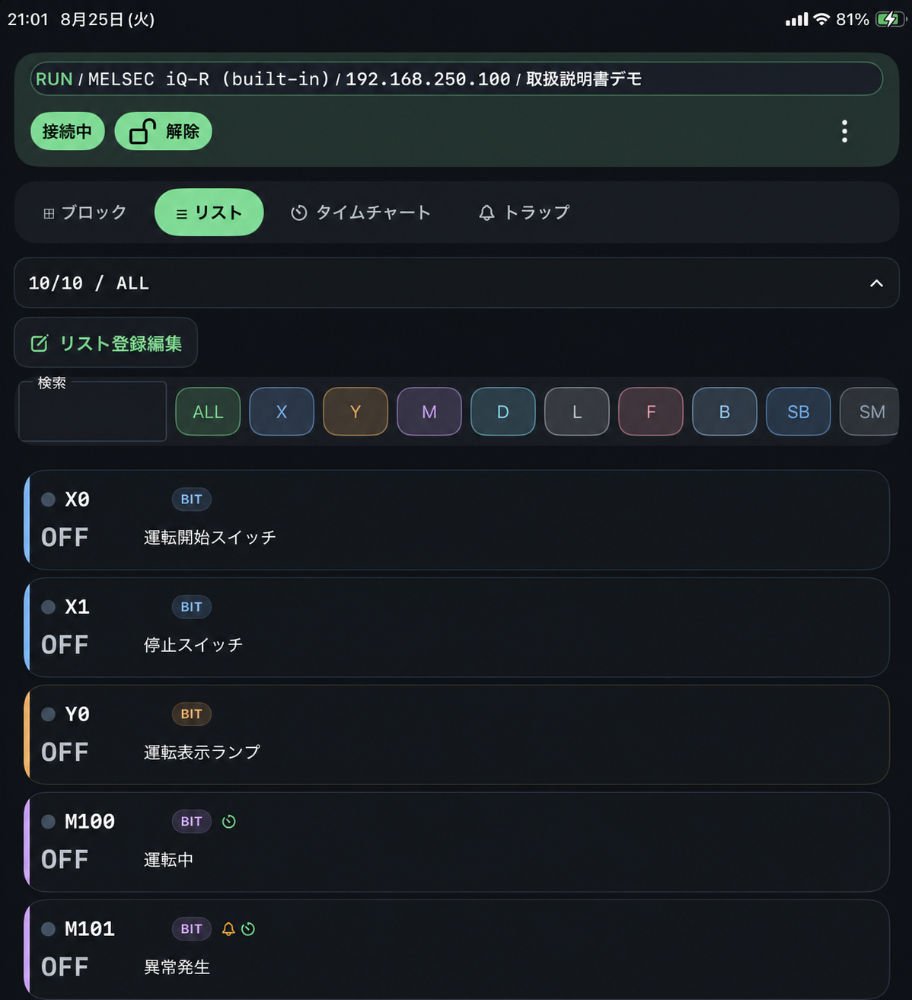

Monitor
監視
ブロック監視、リスト監視、デバイス操作パネルの使い方です。
ブロック監視
ブロック 画面では、CPU のデバイス範囲に沿って連続アドレスをページ単位で表示します。上部の範囲行にはデバイス種別、表示範囲、現在ページ／総ページ数が表示されます。範囲行を開くと、デバイス種別、先頭アドレス、ページ、表示密度を変更できます。


- 種類を変更すると先頭ページに戻ります。
- BIT デバイスは ON/OFF 表示になります。
- 数値デバイスはデータタイプに応じて値を表示します。
コンパクト
連続アドレスを小さなセルで多く表示します。広い範囲の ON/OFF や値変化をまとめて見るときに使います。
詳細
リストと同じカード形式で、アドレス、値、コメント、登録状態を確認しやすくします。コメントや値の内容を見ながら選択したいときに使います。
表示設定画面の名前は モニタ表示設定 です。数値バーの 100% 基準は グラフ100%値 と表示されます。
リスト監視
リスト 画面では、登録したアドレスだけを表示します。検索欄ではアドレスまたはコメントを検索でき、デバイス種別で表示対象を絞り込めます。表示対象の追加・編集は リスト登録編集 から行います。

リスト登録は、タイムチャートのチャンネル登録やトラップ登録とは別です。同じアドレスのコメントはリスト／ブロック／デバイス操作パネル／タイムチャート／トラップで共通して表示されます。